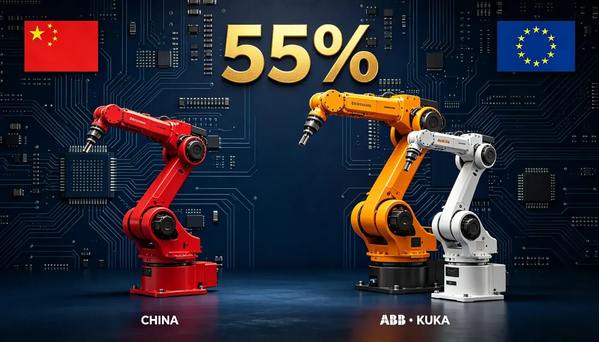

Unitree Go2 vs Spot
China's $1.6K robot dog vs America's $74.5K standard — the same price war, on four legs.
For the first time, Chinese robot brands out-ship foreign brands in their own market — 55% share in Q1 2026. How Estun, Inovance and JAKA beat ABB, KUKA and Fanuc, where Europe still rules, and what a buyer should actually do.

For two decades, the four colors of Fanuc, Yaskawa, ABB and KUKA — yellow, white, cobalt blue and bright orange — were the default sight on every Chinese factory floor. At their peak, the "Big Four" foreign brands held more than 60% of China's industrial robot market. In the first quarter of 2026, that world ended: domestic Chinese brands took 55% of shipments, the first time they have ever outsold the foreign incumbents in their own market.
And in October 2025, the most symbolic event of the shift: ABB agreed to sell its robotics division to SoftBank for US$5.375 billion — the same ABB whose robots once defined European industrial automation.
| Metric | Chinese brands (Estun, Inovance, JAKA, Dobot…) | European / Japanese incumbents (ABB, KUKA, Fanuc, Yaskawa) |
|---|---|---|
| China market share, Q1 2026 | 55% — first-ever majority (was <40% five years ago) | 45%, down from 60%+ at peak |
| No.1 shipper in China | Estun — six consecutive quarters, ~10% share | Fanuc once ~20%+, now ~9% |
| SCARA segment | Inovance ~27% — national No.1 | Epson, Yamaha — fading |
| Collaborative robots | 85% — JAKA, AUBO, Elibot dominate | UR (Denmark), KUKA iisy — premium niche |
| Light 6-axis / welding | 58% / 62% penetration | Retreating to high-end |
| Typical price, same class | 30-80% below imported | Premium: cobots from ~US$30,000 |
| Strategic posture | Volume + localization + process packages | ABB selling robotics to SoftBank; KUKA owned by Midea (China) |
The table tells a clean story: China won the volume war, and Europe is being pushed into the high-end corner. Here is how it happened, dimension by dimension.
Five years ago the Big Four still held more than 60% of China's market. By Q1 2026, according to industry data reported by Jiemian News, domestic brands crossed 55% — a structural crossover, not a blip. Estun has been the overall No.1 shipper for six straight quarters (~10% share), with Inovance at the same level and No.1 in SCARA (27%). Fanuc has slid from a 20%+ peak to about 9%; KUKA, thanks to its Midea (Chinese) parent and local manufacturing, has held roughly 10%.
Bank of UBS-affiliated Puyin International now ranks the market in tiers: Estun, Fanuc and KUKA each ship more than 30,000 units a year; Inovance and ABB more than 20,000. In light-load 6-axis robots, Chinese brands hold 58%; in welding robots, 62%; in palletizing 4-axis, over 70%; in collaborative robots, a stunning 85%.
Same-class Chinese arms cost 30-80% less than imported equivalents — and in collaborative robots the gap is brutal. UFACTORY's own price comparison puts its 850 cobot (5 kg, 850 mm reach) at US$8,999, against KUKA's LBR iisy and KR AGILUS starting around US$30,000. That is roughly one-third the price for comparable or better reach and payload. On traditional 6-axis robots the gap narrows but remains: a Chinese 10 kg-class arm typically lands at $15,000-25,000 against $30,000-50,000 for ABB or KUKA equivalents.
This is the same playbook Unitree used against Boston Dynamics (see our Go2 vs Spot comparison): accept a margin on peak performance, win on price and volume, then reinvest in precision. Estun's gross margin reached 31.8% in H1 2026 with net profit up 2,314% year-on-year — the price war is profitable for the winners.
Chinese arms have closed the precision gap in the volume classes: repeatability of ±0.02-0.05 mm is now routine, matching ABB and KUKA in light and mid payloads. But the top of the pyramid remains European. KUKA's KR 1000 Titan class — 1,000 kg payload, 3.2 m reach, ±0.1 mm — has no Chinese equivalent. Automotive main lines, heavy casting handling and extreme-precision work still default to ABB, KUKA or Fanuc, and that is not changing this year.
Chinese makers compete on process packages and deployment speed: welding, palletizing and screw-driving packages that cut integration costs 30-50%, plus local engineers who show up in days, not weeks. Dobot's case library is full of sub-8-month payback installations in mid-size factories.
ABB and KUKA still win where it matters most for global enterprises: decades of automotive-line certification, mature simulation and fleet software, CE/UL compliance history, and a service network that spans every continent. If your factory must be certified, replicated in three countries and supported for ten years, that premium is real.
Read the ownership chart and the direction is unmistakable. ABB — the European flagship — is selling its robotics unit to SoftBank for $5.375 billion. KUKA, the German pioneer, has been majority-owned by China's Midea since 2022. Meanwhile Estun bought Germany's Cloos (welding robots) back in 2019 and is using the acquisition to sell into European auto supply chains. The Chinese are not just winning at home — they are buying European brand equity to enter Europe.
The takeaway: if you are buying 5-20 kg arms for welding, palletizing, assembly or collaboration in volume, the Chinese price-performance ratio is now the rational default — Estun, Inovance, JAKA and Dobot deliver 70-90% of the capability at 30-60% of the cost, with faster local support. If your line is heavy automotive, extreme-precision or globally replicated with strict certification, ABB and KUKA remain the safe answer. The 55% crossing is history; the question now is how far up-market China climbs. For the core components behind these arms, see China's RV reducer supply chain, and for the two Chinese champions, read the Estun profile and Inovance profile.
China's $1.6K robot dog vs America's $74.5K standard — the same price war, on four legs.
China's No.1 industrial robot shipper, six quarters running.
Who makes the precision gearboxes inside Chinese arms.
The full picture of the world's largest robot market.
Spec sheets for Estun, Inovance, JAKA, Dobot and 90+ more Chinese robot and component makers.